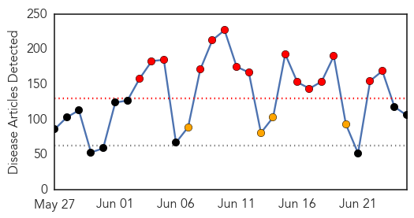
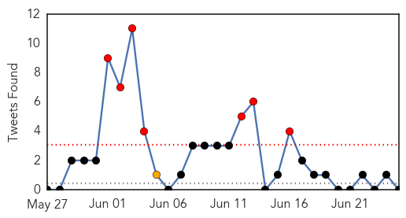

30 Day Trends
Web: 15 alerts, 4 warnings
Twitter: 0 alerts, 0 warnings
Top Articles:
- 0.999
- SoKor Reports 4 New MERS Cases, Outruns KSA On Outbreak Progress
- 0.998
- S. Korea medical facilities stop healthcare to curb MERS spread - Regional
- 0.998
- SKorea says MERS outbreak at crossroads
- 0.997
- South Korea’s Fight With MERS Outbreak
- 0.996
- SK says outbreak at crossroads
- 0.995
- Two more die of MERS, including caregiver
- 0.992
- South Korea hospitals to monitor emergency room visitors in battle on Mers, Government & Economy
- 0.989
- S.Korea hospitals to monitor emergency room visitors in battle on MERS
- 0.989
- Virus Mutation Explains Poor Performance of Last Season's Flu Shot
- 0.987
- S Korea hospitals to monitor emergency room visitors in battle on MERS
- 0.986
- S Korea hospitals to track emergency room visitors in battle..
- 0.981
- South Korea's MERS deaths reach 23 — World News
- 0.977
- Meningococcal case sparks warning
- 0.966
- Stimulus package to boost MERS-hit South Korean economy
- 0.964
- Flu Vaccine Was Highly Ineffective This Year Because Of Key Virus Mutations, Study Finds
- 0.963
- South Korea hospitals told to monitor emergency room visitors in battle on MERS
- 0.962
- Fatality rate up to 16%
- 0.956
- Greater Jakarta: Test declares child free of MERS
- 0.947
- Testing proves Jakarta toddler suspected of having MERS is NOT infected
- 0.946
- Test declares child free of MERS in Jakarta, news, Health News, AsiaOne YourHealth
- 0.944
- MERS Outbreak: Samsung Hospital Offers Apology as South Korea Gears up with $9 Billion
- 0.943
- Officials check Bangkok hospitals' readiness to treat MERS cases
- 0.934
- Isolated parking at Don Mueang for flights from South Korea provided as precaution
- 0.933
- Health ministry in South Korea to monitor emergency ward visitors
- 0.917
- Chicago Tribune
- 0.917
- Chicago Tribune
- 0.917
- Chicago Tribune
- 0.917
- Chicago Tribune
- 0.917
- Chicago Tribune
- 0.917
- Chicago Tribune
- 0.917
- Chicago Tribune
- 0.917
- Chicago Tribune
- 0.917
- Chicago Tribune
- 0.917
- Chicago Tribune
- 0.917
- Chicago Tribune
- 0.917
- Chicago Tribune
- 0.917
- Chicago Tribune
- 0.917
- Chicago Tribune
- 0.917
- Chicago Tribune
- 0.917
- Chicago Tribune
- 0.898
- KBS World Radio
- 0.892
- Pig farmers warned of imminent threat of African swine fever to Germany
- 0.884
- Economic Concerns Grow in S. Korea as MERS Death Toll Rises
- 0.865
- Student games and Mers virus
- 0.851
- Pet Talk: Chagas Disease in Dogs
- 0.841
- British woman in Hua Hin in quarantine for MERS
- 0.834
- Korea releases names of six additional health-care facilities affected by MERS
- 0.833
- Florida health officials trying to ease fears over coastal bacteria
- 0.820
- Yala Hospital ready to prevent MERS outbreak when Muslim pilgrims return from Saudi Arabia
- 0.819
- Pakistan: Deaths 1,200 as Karachi wilts under heat
Showing top 50 articles...
Top Tweets:
- 0.760
- Antibiotics are not a treatment for cold or flu! Protect yourself against the flu and get a flushotnow http://t.co/lSTQOupDEo
- 0.625
- ISG experts warn of severe flu season - Health & Wellbeing: http://t.co/cd52ivMrKo flushotnow
- 0.574
- Saudi Arabia announces another MERS case at Hufof. Believe that outbreak now totals 39 cases, 21 deaths. http://t.co/AuGm1Z6WWU
- 0.521
- Health system braces for bad flu season https://t.co/8GpOOX61GV via flushotnow
Web/News Articles
Tweets
Article Locations
Article Confidences